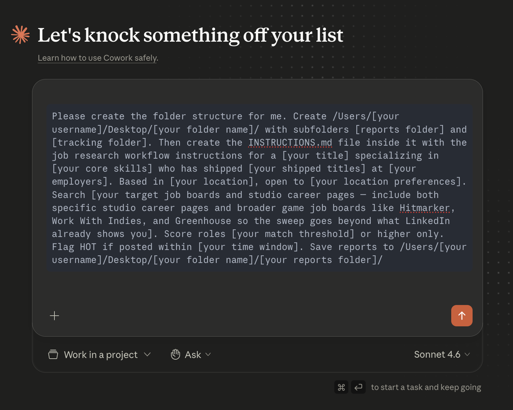
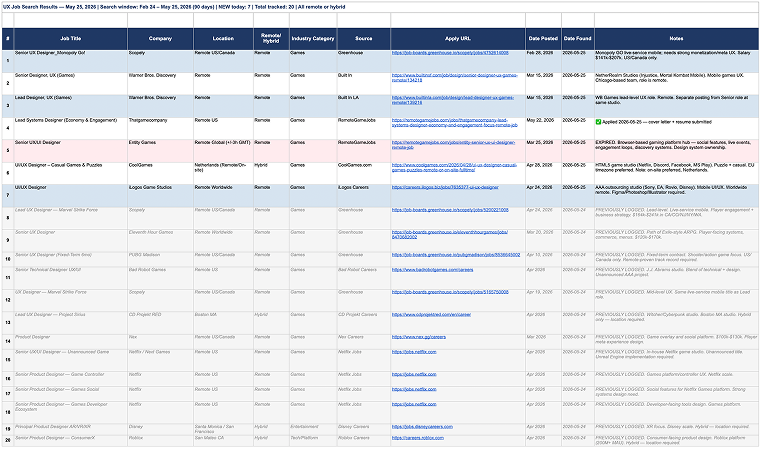

This started with a LinkedIn post about the hidden job market. I wanted the same thing, but automated.
I opened Claude Desktop. Switched to Cowork. Clicked New Task. The folder didn't exist yet so I asked Cowork to build everything itself. Here's the exact prompt:

"Please create the folder structure for me. Create /Users/[your username]/Desktop/[your folder name]/ with subfolders [reports folder] and [tracking folder]. Then create the INSTRUCTIONS.md file inside it with the job research workflow instructions for a [your title] specializing in [your core skills] who has shipped [your shipped titles] at [your employers]. Based in [your location], open to [your location preferences]. Search [your target job boards and studio career pages — include both specific studio career pages and broader game job boards like Hitmarker, Work With Indies, and Greenhouse so the sweep goes beyond what LinkedIn already shows you]. Score roles [your match threshold] or higher only. Flag HOT if posted within [your time window]. Save reports to /Users/[your username]/Desktop/[your folder name]/[your reports folder]/"
One prompt. Cowork built the folder, the subfolders, and wrote the instructions file directly on the machine. No manual setup.
/Users/[your username]/Desktop/[your folder name]/ ├── INSTRUCTIONS.md ├── [your reports folder]/ └── [your tracking folder]/
Typed "run the job research workflow." It executed. First report landed in 15 minutes. Some results came back below threshold. The market was thin that day. The system told the truth instead of padding the results. That's the value.

If you want to go deeper, run the same prompt in Gemini with Deep Research enabled in parallel. Anything that surfaces in both is a priority. Two independent systems finding the same role means it's real and it's a fit.